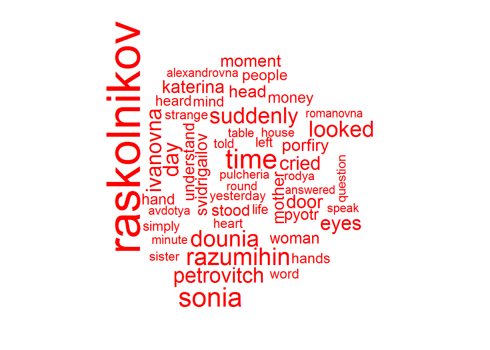
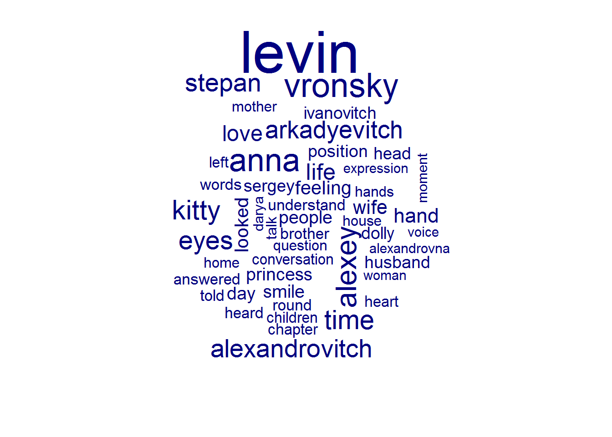
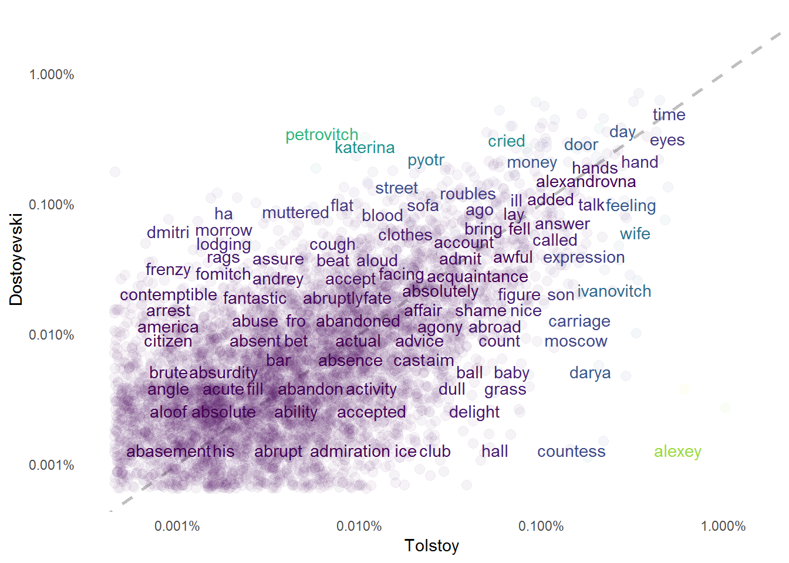
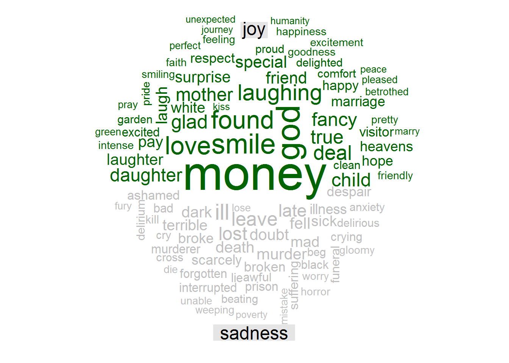
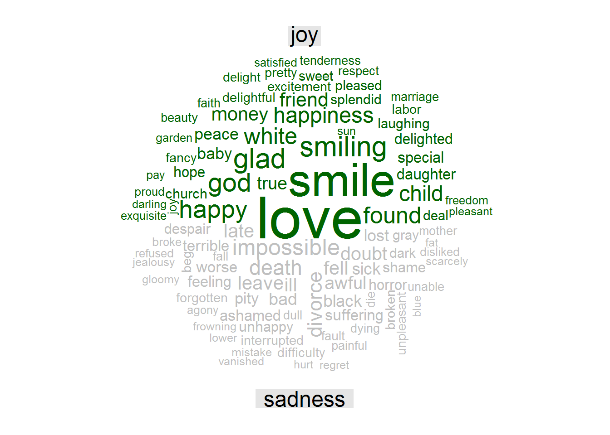

Text Mining Crime and Punishment & Anna Karenina: A Tidytext Approach
Welcome to a new exciting post! Today I have decided to bring you text mining applied to two of my favorite novels: Crime and Punishment by Dostoyevsky and Anna Karenina by Tolstoy. We will use mainly the incredible tidytext package developed by Julia Silge and David Robinson. You can read more about this package in the book of the same authors Text Mining with R: A Tidytext Approach.
Let us start the analysis of “Crime and Punishment” and “Anna Karenina” by loading the required packages.
# load libraries
library(gutenbergr)
library(tidytext)
library(tidyverse)
library(kableExtra)
library(knitr)
library(forcats)
library(extrafont)
library(scales)
library(wordcloud)
library(reshape2)
library(viridis)
library(igraph)
library(ggraph)
library(widyr)
options(scipen = 999)Loading the books and Building Tidy Datasets
In this first section of our analysis, we will use the function gutenberg_metadata from the package gutenbergr to check the id of the books we are interested in analyzing.
# check the id of crime and punishment
gutenberg_metadata %>%
filter(title == "Crime and Punishment")## # A tibble: 1 x 8
## gutenberg_id title author gutenberg_autho~ language gutenberg_books~
## <int> <chr> <chr> <int> <chr> <chr>
## 1 2554 Crim~ Dosto~ 314 en Best Books Ever~
## # ... with 2 more variables: rights <chr>, has_text <lgl># check the id of Anna Karenina
gutenberg_metadata %>%
filter(title == "Anna Karenina")## # A tibble: 3 x 8
## gutenberg_id title author gutenberg_autho~ language gutenberg_books~
## <int> <chr> <chr> <int> <chr> <chr>
## 1 1399 Anna~ Tolst~ 136 en Harvard Classic~
## 2 13214 Anna~ Tolst~ 136 nl Harvard Classics
## 3 49487 Anna~ Tolst~ 136 fi <NA>
## # ... with 2 more variables: rights <chr>, has_text <lgl>So, the gutenberg_id of “Crime and Punishment” is 2554 and of “Anna Karenina” is 1399 for the English version.
Now, we will load both books with the gutenberg_download() function.
# load both books
crime_punishment <- gutenberg_download(2554)## Determining mirror for Project Gutenberg from http://www.gutenberg.org/robot/harvest## Using mirror http://aleph.gutenberg.orgglimpse(crime_punishment)## Observations: 22,061
## Variables: 2
## $ gutenberg_id <int> 2554, 2554, 2554, 2554, 2554, 2554, 2554, 2554, 2...
## $ text <chr> "CRIME AND PUNISHMENT", "", "By Fyodor Dostoevsky...anna_karenina <- gutenberg_download(1399)
glimpse(anna_karenina)## Observations: 39,898
## Variables: 2
## $ gutenberg_id <int> 1399, 1399, 1399, 1399, 1399, 1399, 1399, 1399, 1...
## $ text <chr> " Anna Karenina", "",...We can now tidy our datasets.
# tidying both books
# crime and punishment
crime_punishment_tidy <- crime_punishment %>%
slice(-c(1:102)) %>%
mutate(line_num = row_number(),# create new variable line_num
part = cumsum(str_detect(text, regex("^PART [\\divxlc]",
ignore_case = TRUE)))) %>% # create variable part: Crime and Punishment has 7 parts %>%
group_by(part) %>%
mutate(chapter = cumsum(str_detect(text, regex("^CHAPTER [\\divxlc]",
ignore_case = TRUE)))) %>% # create new variable number of Chapter per part %>%
ungroup()
# anna karenina
anna_karenina_tidy <- anna_karenina %>%
slice(-c(1:12)) %>%
mutate(line_num = row_number(), # create new varibale line_num
text = str_replace(text, c("PART ONE"),
c("PART 1")),
text = str_replace(text, "PART TWO",
"PART 2"),
text = str_replace(text, "PART THREE",
"PART 3"),
text = str_replace(text, "PART FOUR",
"PART 4"),
text = str_replace(text, "PART FIVE",
"PART 5"),
text = str_replace(text, "PART SIX",
"PART 6"),
text = str_replace(text, "PART SEVEN",
"PART 7"),
text = str_replace(text, "PART EIGHT",
"PART 8"), # put the text related to the part in a digit format
part = cumsum(str_detect(text,
regex("^part [:digit:]",
ignore_case = TRUE)))) %>% # create new variable part: Anna Karenina has 8 parts %>%
group_by(part) %>%
mutate(chapter = cumsum(str_detect(text, regex("^CHAPTER [\\divxlc]",
ignore_case = TRUE)))) %>% # create new varible number of Chapter per part #%>%
ungroup()Let us take a look at our datasets.
glimpse(crime_punishment_tidy)## Observations: 21,959
## Variables: 5
## $ gutenberg_id <int> 2554, 2554, 2554, 2554, 2554, 2554, 2554, 2554, 2...
## $ text <chr> "PART I", "", "", "", "CHAPTER I", "", "On an exc...
## $ line_num <int> 1, 2, 3, 4, 5, 6, 7, 8, 9, 10, 11, 12, 13, 14, 15...
## $ part <int> 1, 1, 1, 1, 1, 1, 1, 1, 1, 1, 1, 1, 1, 1, 1, 1, 1...
## $ chapter <int> 0, 0, 0, 0, 1, 1, 1, 1, 1, 1, 1, 1, 1, 1, 1, 1, 1...glimpse(anna_karenina_tidy)## Observations: 39,886
## Variables: 5
## $ gutenberg_id <int> 1399, 1399, 1399, 1399, 1399, 1399, 1399, 1399, 1...
## $ text <chr> "PART 1", "", "", "", "Chapter 1", "", "", "Happy...
## $ line_num <int> 1, 2, 3, 4, 5, 6, 7, 8, 9, 10, 11, 12, 13, 14, 15...
## $ part <int> 1, 1, 1, 1, 1, 1, 1, 1, 1, 1, 1, 1, 1, 1, 1, 1, 1...
## $ chapter <int> 0, 0, 0, 0, 1, 1, 1, 1, 1, 1, 1, 1, 1, 1, 1, 1, 1...We still have all words from the novels in a column called text. Our goal is to create a new column where each row corresponds to only one word. To get one word per row, we need to use the function unnest_tokens from the tidytext package.
# crime and punishment
cp <- crime_punishment_tidy %>%
unnest_tokens(word, text) %>%
mutate(word = str_replace(word, "_", "")) # remove underscores from words
# anna karenina
ak <- anna_karenina_tidy %>%
unnest_tokens(word, text) %>%
mutate(word = str_replace(word, "_", "")) # remove underscores from wordsNow we can see that each row corresponds to a word in the “Crime and Punishment” dataset.
# crime and punishment
cp %>%
head(20) %>% # only the first 20 rows
kable() | gutenberg_id | line_num | part | chapter | word |
|---|---|---|---|---|
| 2554 | 1 | 1 | 0 | part |
| 2554 | 1 | 1 | 0 | i |
| 2554 | 5 | 1 | 1 | chapter |
| 2554 | 5 | 1 | 1 | i |
| 2554 | 7 | 1 | 1 | on |
| 2554 | 7 | 1 | 1 | an |
| 2554 | 7 | 1 | 1 | exceptionally |
| 2554 | 7 | 1 | 1 | hot |
| 2554 | 7 | 1 | 1 | evening |
| 2554 | 7 | 1 | 1 | early |
| 2554 | 7 | 1 | 1 | in |
| 2554 | 7 | 1 | 1 | july |
| 2554 | 7 | 1 | 1 | a |
| 2554 | 7 | 1 | 1 | young |
| 2554 | 7 | 1 | 1 | man |
| 2554 | 7 | 1 | 1 | came |
| 2554 | 7 | 1 | 1 | out |
| 2554 | 7 | 1 | 1 | of |
| 2554 | 8 | 1 | 1 | the |
| 2554 | 8 | 1 | 1 | garret |
As well as in the “Anna Karenina” dataset.
# anna karenina
ak %>%
head(20) %>% #only the first 20 rows
kable()| gutenberg_id | line_num | part | chapter | word |
|---|---|---|---|---|
| 1399 | 1 | 1 | 0 | part |
| 1399 | 1 | 1 | 0 | 1 |
| 1399 | 5 | 1 | 1 | chapter |
| 1399 | 5 | 1 | 1 | 1 |
| 1399 | 8 | 1 | 1 | happy |
| 1399 | 8 | 1 | 1 | families |
| 1399 | 8 | 1 | 1 | are |
| 1399 | 8 | 1 | 1 | all |
| 1399 | 8 | 1 | 1 | alike |
| 1399 | 8 | 1 | 1 | every |
| 1399 | 8 | 1 | 1 | unhappy |
| 1399 | 8 | 1 | 1 | family |
| 1399 | 8 | 1 | 1 | is |
| 1399 | 8 | 1 | 1 | unhappy |
| 1399 | 8 | 1 | 1 | in |
| 1399 | 8 | 1 | 1 | its |
| 1399 | 8 | 1 | 1 | own |
| 1399 | 9 | 1 | 1 | way |
| 1399 | 11 | 1 | 1 | everything |
| 1399 | 11 | 1 | 1 | was |
So far so good! We have one word per row, but we still need to remove stop words from our word column. Stop words are commonly used words such as “the”, “a”, “and”, etc. To remove them we should use the anti_join() function. We will also add a new stop word, “said”, mentioned several times in “Anna Karenina”.
# remove stopwords
# crime and punishment
cp_new <- cp %>%
anti_join(stop_words, by = "word")
# anna karenina
ak_new <- ak %>%
anti_join(stop_words, by = "word")
# add stopword "said"
stop_w <- data.frame(word = "said")
# remove stopword "said" in anna karenina
ak_new <- ak_new %>%
anti_join(stop_w, by = "word")Analyzing Word Frequency
In thissection , we will analyze the word frequency of both novels. First, we are interested in knowing which use words are used more in each novel:
Crime and Punishment
# top 10 words used in Crime and Punishment
cp_new %>%
count(word, sort = TRUE) %>%
top_n(10, n) %>%
ggplot(aes(x = fct_reorder(word, n), y = n, fill = word)) +
geom_col(show.legend = FALSE) +
scale_fill_viridis_d(option = "magma") +
coord_flip() +
xlab(NULL) +
labs(title = "Crime and Punishment: Top 10 words used") +
theme_minimal()Here we have the ten most used words in “Crime and Punishment”. Unsurprisingly, the word used more often corresponds to the name of the main character, Raskolnikov. We can also use a word cloud:
cp_new %>%
count(word) %>%
with(wordcloud(word, n,
max.words = 50,
color = "red"))
As expected, Raskolnikov is the most mentioned word.
Let’s now analyze “Anna Karenina”
Anna Karenina
ak_new %>%
count(word, sort = TRUE) %>%
top_n(10, n) %>%
ggplot(aes(x = fct_reorder(word, n), y = n, fill = word)) +
geom_col(show.legend = FALSE) +
scale_fill_viridis_d(option = "magma") +
coord_flip() +
xlab(NULL) +
labs(title = "Anna Karenina: Top 10 words used") +
theme_minimal()80 percent of the top 10 words used in “Anna Karenina” correspond to characters. Anna and her lover Vronsky occupy 2 of the first 3 positions. Nonetheless, the most used word corresponds to Levin which is not surprising at all. Firstly, Levin is to some extent Tolstoy’s alter ego. Importantly, Anna and Levin are the two main characters in the novel and both convey two different messages. While Anna is unfaithful to her husband and only finds sorrow along her journey, Levin finds love, gets married and becomes a father whilst experiencing a spiritual awakening. He becomes hopeful, whereas Anna falls into despair and no longer able to face reality, ends up killing herself.
We can also build a word cloud:
ak_new %>%
count(word) %>%
with(wordcloud(word, n,
max.words = 50,
color = "navyblue"))
Let’s now try to check the frequency of common words in both novels. We will bind together the two datasets:
ak_cp <- bind_rows(mutate(ak_new, author = "Tolstoi"),
mutate(cp_new, author = "Dostoievski")) %>%
mutate(word = str_extract(word, "[a-z']+")) %>%
count(author, word) %>%
group_by(author) %>%
mutate(prop = n / sum(n)) %>%
select(-n) %>%
spread(author, prop) %>%
gather(author, prop, "Tolstoi") And plot it:
# plot
ggplot(ak_cp, aes(x = prop, y = `Dostoievski`,
color = abs(`Dostoievski` - prop))) +
geom_abline(color = "grey75", lty = 2, size = 1) +
geom_jitter(alpha = 0.05, size = 2.75, width = 0.3, height = 0.4) +
geom_text(aes(label = word), check_overlap = TRUE, vjust = 1.5) +
scale_x_log10(labels = percent_format()) +
scale_y_log10(labels = percent_format()) +
scale_color_viridis() +
guides(color = FALSE) +
theme(legend.position="none") +
labs(y = "Dostoyevski", x = "Tolstoy") +
theme_minimal() +
theme(panel.grid = element_blank())## Warning: Removed 9279 rows containing missing values (geom_point).## Warning: Removed 9280 rows containing missing values (geom_text).
Words near the dash line are the ones equally frequent in both novels. For instance, the words “time”, “attend”, and “abandoned” have about the same frequency in “Crime and Punishment” and “Anna Karenina”. Words that are further from the dash line have different frequencies in these two masterpieces. Words such as “murder”, “blood”, “flat” are much more frequent in “Crime and Punishment” given that the novel is about Alyona Ivanovna’s assassination and how Raskolnikov struggles with it. In “Anna Karenina” the words “baby”, “grass”“, and”countess" are mentioned more frequently.
We can conclude this part of our analysis by looking into the correlations of the word frequencies by using the cor.test() function.
# correlation test
cor.test(data = ak_cp, ~ prop + `Dostoievski`)##
## Pearson's product-moment correlation
##
## data: prop and Dostoievski
## t = 72.676, df = 6069, p-value < 0.00000000000000022
## alternative hypothesis: true correlation is not equal to 0
## 95 percent confidence interval:
## 0.6684599 0.6953681
## sample estimates:
## cor
## 0.6821449In summary, the word frequencies of “Crime and Punishment” and “Anna Karenina” have a positive correlation of 0.68.
Sentiment Analysis
In the last section of this analysis, we dealt with word frequency. While interesting, word frequency does not tell us much about the emotions/states of mind present in the two novels. For this reason, we will go ahead with a sentiment analysis of “Crime and Punishment” and “Anna Karenina”.
First, we will use two sentiment lexicons. One called “nrc” which has the following emotion categories: positive, negative, anger, anticipation, disgust, fear, joy, sadness, surprise, and trust; and another called “afinn” which corresponds to a sentiment score from -5 (very negative) to 5 (very positive). Each sentiment lexicon we be bound together with each novel dataset. Afterwards, we will wrangle our dataset and plot it.
Crime and Punishment
# crime and punishment - method nrc
cp_new %>%
inner_join(get_sentiments("nrc")) %>%
count(index = line_num %/% 70, sentiment) %>% # index of 70 lines of text
spread(sentiment, n, fill = 0) %>%
mutate(sentiment = positive - negative) %>%
ggplot(aes(x = index, sentiment)) +
geom_col(fill = "red", show.legend = FALSE) +
labs(title = "Sentiment Analysis of Crime and Punishment",
subtitle = "Method NRC") +
theme_minimal()
# crime and punishment - method afinn
cp_new %>%
inner_join(get_sentiments("afinn")) %>%
group_by(index = line_num %/% 70) %>% # index of 70 lines of text
summarise(sentiment = sum(score)) %>%
ggplot(aes(x = index, sentiment, fill = "red")) +
geom_col(fill = "red", show.legend = FALSE) +
guides(fill = FALSE) +
labs(title = "Sentiment Analysis of Crime and Punishment",
subtitle = "Method AFINN") +
theme_minimal()From these visualizations, we can see that “Crime and Punishment” reflects a more negative sentiment than positive one. We can check the proportion of each sentiment using ggplot2:
cp_new %>%
inner_join(get_sentiments("nrc")) %>%
count(sentiment) %>%
mutate(total = sum(n),
prop = n / total) %>%
ggplot(aes(fct_reorder(sentiment, prop), y = prop, fill = sentiment)) +
geom_col(show.legend = FALSE) +
scale_fill_viridis_d(option = "magma") +
xlab(NULL) +
ggtitle("Sentiment Analysis of Crime and Punishment") +
coord_flip() +
theme_minimal()## Joining, by = "word"cp_new %>%
inner_join(get_sentiments("afinn")) %>%
mutate(sentiment = case_when(score > 0 ~ "positive",
score < 0 ~ "negative",
score == 0 ~ "neutral")) %>%
count(sentiment) %>%
mutate(total = sum(n),
prop = n /total) %>%
ggplot(aes(sentiment, y = prop, fill = sentiment)) +
geom_col() +
coord_flip() +
theme_minimal()## Joining, by = "word"Let us check now “Anna Karenina”.
Anna Karenina
# anna karenina - method nrc
ak_new %>%
inner_join(get_sentiments("nrc")) %>%
count(index = line_num %/% 70, sentiment) %>% # index of 70 lines of text
spread(sentiment, n, fill = 0) %>%
mutate(sentiment = positive - negative) %>%
ggplot(aes(x = index, sentiment)) +
geom_col(fill = "navyblue", show.legend = FALSE) +
xlab(NULL) +
labs(title = "Sentiment Analysis of Anna Karenina",
subtitle = "Method NRC") +
theme_minimal()# anna karenina - method nrc
ak_new %>%
inner_join(get_sentiments("afinn")) %>%
group_by(index = line_num %/% 70) %>% # index of 70 lines of text
summarise(sentiment = sum(score)) %>%
ggplot(aes(x = index, sentiment)) +
geom_col(fill = "navyblue", show.legend = FALSE) +
guides(fill = FALSE) +
labs(title = "Sentiment Analysis of Anna Karenina",
subtitle = "Method AFINN") +
theme_minimal()Positive seems to be more present than negative sentiment. We can also build a bar plot to check this:
ak_new %>%
inner_join(get_sentiments("nrc")) %>%
count(sentiment) %>%
mutate(total = sum(n),
prop = n / total) %>%
ggplot(aes(fct_reorder(sentiment, prop), y = prop, fill = sentiment)) +
geom_col(show.legend = FALSE) +
xlab(NULL) +
ggtitle("Sentiment Analysis of Anna Karenina") +
scale_fill_viridis_d(option = "magma") +
coord_flip() +
theme_minimal()## Joining, by = "word"ak_new %>%
inner_join(get_sentiments("afinn")) %>%
mutate(sentiment = case_when(score > 0 ~ "positive",
score < 0 ~ "negative",
score == 0 ~ "neutral")) %>%
count(sentiment) %>%
mutate(total = sum(n),
prop = n /total) %>%
ggplot(aes(sentiment, y = prop, fill = sentiment)) +
geom_col() +
coord_flip() +
theme_minimal()## Joining, by = "word"Positive sentiment is more frequent than negative sentiment in “Anna Karenina”.
To finalize the sentiment analysis, we will build a word cloud with the most frequent words for this emotional axis: joy versus sadness.
Crime and Punishment
cp_new %>%
inner_join(get_sentiments("nrc")) %>%
count(word, sentiment, sort = TRUE) %>%
filter(sentiment %in% c("joy", "sadness")) %>%
spread(sentiment, n, fill = 0) %>%
as.data.frame() %>%
remove_rownames() %>%
column_to_rownames("word") %>%
comparison.cloud(colors = c("darkgreen", "grey75"),
max.words = 100,
title.size = 1.5)
These word clouds show the most common word for each sentiment that is not present in bothvariants . For instance, the word “feeling” showed a high frequency in both positive and negative sentiments, but it was not displayed in the word cloud because this only shows words present in one of the variants. Taking that into account, “Money”" is the most frequent word as joy sentiment and “ill” the most common for sadness sentiment.
Anna Karenina
ak_new %>%
inner_join(get_sentiments("nrc")) %>%
count(word, sentiment, sort = TRUE) %>%
filter(sentiment %in% c("joy", "sadness")) %>%
spread(sentiment, n, fill = 0) %>%
as.data.frame() %>%
remove_rownames() %>%
column_to_rownames("word") %>%
comparison.cloud(colors = c("darkgreen", "grey75"),
max.words = 100,
title.size = 1.5)
In Anna Karenina’s novel, “love” is the more frequent word as joy sentiment, while the word “impossible” is the one more frequent for sadness.
Relationships between words
Until this point, we have analyzed individual words and have not considered the relationships between them . In this section, we will analyze the sequence of words, termed n-grams and also the correlation between pairs of words.
Let’s start with the n-grams analysis. In this case we are interested in analyzing bigrams, that is, the pairs of words being mentioned consecutively in higher frequency in each novel.
First, we have to resort again to the function unnest_tokens from the tidytext package, but now using the argument bigram with n equals 2.
# bigrams
# crime and punishment
cp_ngram <- crime_punishment_tidy %>%
unnest_tokens(bigram, text, token = "ngrams", n = 2) %>%
na.omit()
# anna karenina
ak_ngram <- anna_karenina_tidy %>% unnest_tokens(bigram, text,
token = "ngrams",
n = 2) %>%
na.omit()Now, we should separate the bigram column in two, in order to remove stop words and count the most common bigrams:
Crime and Punishment
# bigrams crime and punishment
bigrams_cp <- cp_ngram %>%
separate(bigram, c("w1", "w2"), sep = " ") %>%
filter(!w1 %in% stop_words$word) %>%
filter(!w2 %in% stop_words$word) %>%
count(w1, w2, sort = TRUE)
bigrams_cp ## # A tibble: 10,462 x 3
## w1 w2 n
## <chr> <chr> <int>
## 1 katerina ivanovna 163
## 2 pyotr petrovitch 140
## 3 avdotya romanovna 98
## 4 pulcheria alexandrovna 97
## 5 rodion romanovitch 78
## 6 porfiry petrovitch 71
## 7 marfa petrovna 64
## 8 sofya semyonovna 59
## 9 amalia ivanovna 46
## 10 ha ha 37
## # ... with 10,452 more rowsKaterina Ivanovna, Sonia’s stepmom and Raskolnikov’s girlfriend in “Crime and Punishement, is the most common bigram.
Anna Karenina
bigrams_ak <- ak_ngram %>%
separate(bigram, c("w1", "w2"), sep = " ") %>%
filter(!w1 %in% stop_words$word) %>%
filter(!w2 %in% stop_words$word) %>%
count(w1, w2, sort = TRUE)
bigrams_ak ## # A tibble: 18,970 x 3
## w1 w2 n
## <chr> <chr> <int>
## 1 stepan arkadyevitch 435
## 2 alexey alexandrovitch 428
## 3 sergey ivanovitch 242
## 4 darya alexandrovna 166
## 5 lidia ivanovna 85
## 6 countess lidia 74
## 7 agafea mihalovna 53
## 8 anna arkadyevna 50
## 9 konstantin levin 44
## 10 looked round 43
## # ... with 18,960 more rowsIn “Anna Karenina” the most common bigram is Anna’s brother and Levin’s best friend, Stepan Arkadyevitch.
In the following steps we will plot the network of bigrams for each novel with the help of ggraph.
Crime and Punishment
# plot bigrams of crime and punishment
graph_cp <- bigrams_cp %>%
filter(n > 10) %>%
graph_from_data_frame()
set.seed(999)
seta <- grid::arrow(type = "closed", length = unit(.15, "inches"))
ggraph(graph_cp, layout = "fr") +
geom_edge_link(aes(edge_alpha = n), show.legend = FALSE,
arrow = seta, end_cap = circle(.07, 'inches')) +
geom_node_point(color = "lightblue", size = 5) +
geom_node_text(aes(label = name), vjust = 1, hjust = 1, repel = TRUE) +
theme_void()Here you can see the words more frequently correlated to the main character, Raskolnikov, are “answered”, “walked,”looked“,”cried“.
Anna Karenina
graph_ak <- bigrams_ak %>%
filter(n > 10) %>%
graph_from_data_frame()
set.seed(999)
seta <- grid::arrow(type = "closed", length = unit(.15, "inches"))
ggraph(graph_ak, layout = "fr") +
geom_edge_link(aes(edge_alpha = n), show.legend = FALSE,
arrow = seta, end_cap = circle(.07, 'inches')) +
geom_node_point(color = "lightblue", size = 5) +
geom_node_text(aes(label = name), vjust = 1, hjust = 1, repel = TRUE) +
theme_void()In “Anna Karenina”, the word Levin is more frequently paired with “Konstantin”, his first name, “answered”, “looked”, and “heard”.
To finalize our analysis, we will use the widyr package to see the correlations between pairs of words. With the pairwise_cor() we can compute these correlations for each novel.
# widyr use of pairwise_cor function
# crime and punishment
cp_new %>%
mutate(section = row_number() %/% 20) %>%
add_count(word) %>%
filter(section > 0, n > 200) %>%
pairwise_cor(word, section, sort = TRUE) ## # A tibble: 182 x 3
## item1 item2 correlation
## <chr> <chr> <dbl>
## 1 katerina ivanovna 0.790
## 2 ivanovna katerina 0.790
## 3 sonia katerina 0.163
## 4 katerina sonia 0.163
## 5 sonia ivanovna 0.141
## 6 ivanovna sonia 0.141
## 7 looked eyes 0.108
## 8 eyes looked 0.108
## 9 razumihin raskolnikov 0.0559
## 10 raskolnikov razumihin 0.0559
## # ... with 172 more rowswords_cors_cp <- cp_new %>%
mutate(section = row_number() %/% 20) %>%
filter(section > 0) %>%
group_by(word) %>%
filter(n() > 100) %>%
pairwise_cor(word, section, sort = TRUE)
# anna karenina
ak_new %>%
mutate(section = row_number() %/% 20) %>%
add_count(word) %>%
filter(section > 0, n > 200) %>%
pairwise_cor(word, section, sort = TRUE) ## # A tibble: 1,980 x 3
## item1 item2 correlation
## <chr> <chr> <dbl>
## 1 arkadyevitch stepan 0.922
## 2 stepan arkadyevitch 0.922
## 3 ivanovitch sergey 0.910
## 4 sergey ivanovitch 0.910
## 5 alexandrovitch alexey 0.885
## 6 alexey alexandrovitch 0.885
## 7 looked round 0.145
## 8 round looked 0.145
## 9 ivanovitch brother 0.137
## 10 brother ivanovitch 0.137
## # ... with 1,970 more rowswords_cors_ak <- ak_new %>%
mutate(section = row_number() %/% 20) %>%
filter(section > 0) %>%
group_by(word) %>%
filter(n() > 100) %>%
pairwise_cor(word, section, sort = TRUE)The most correlated pair of words in “Crime and Punishment” is Katerina-Ivanovna and in “Anna Karenina” is Stepan-Arkadyevitch.
Now, we will plot these correlations with the help of ggraph.
Crime and Punishment
# graph of pairwise correlation of words in crime and punishment
set.seed(999)
words_cors_cp %>%
filter(correlation > .10) %>%
graph_from_data_frame() %>%
ggraph(layout = "fr") +
geom_edge_link(aes(edge_alpha = correlation, edge_width = correlation),
edge_colour = "black") +
geom_node_point(color = "orange", size = 5) +
geom_node_text(aes(label = name), repel = TRUE, size = 8, color = "white", family = "Agency FB") +
scale_color_viridis() +
labs(title = "Pairwise Correlation of Words in Crime and Punishment",
subtitle = "Pairs with less than 0.10 were removed") +
theme_void() +
theme(
text = element_text(family = "Agency FB", face = "bold"),
panel.grid = element_blank(),
axis.text = element_blank(),
legend.position = "bottom",
plot.background = element_rect(fill = "#81BEF7"),
plot.title = element_text(size = 20, color = "White",face = "bold"),
plot.subtitle = element_text(size = 12, color = "White",face = "bold"),
legend.text = element_text(color = "white", face = "bold"),
legend.title = element_text(color = "white", face = "bold", size = 14)
) Anna Karenina
# graph of pairwise correlation of words in anna karenina
set.seed(999)
words_cors_ak %>%
filter(correlation > .10) %>%
graph_from_data_frame() %>%
ggraph(layout = "fr") +
geom_edge_link(aes(edge_alpha = correlation, edge_width = correlation),
edge_colour = "darkgreen") +
geom_node_point(color = "#808080", size = 5) +
geom_node_text(aes(label = name), repel = TRUE, size = 6, color = "white", family = "Agency FB") +
scale_color_viridis() +
labs(title = "Pairwise Correlation of Words in Anna Karenina",
subtitle = "Pairs with less than 0.10 were removed") +
theme_void() +
theme(
text = element_text(family = "Agency FB", face = "bold"),
panel.grid = element_blank(),
axis.text = element_blank(),
legend.position = "bottom",
plot.background = element_rect(fill = "grey75"),
plot.title = element_text(size = 20, color = "White",face = "bold"),
plot.subtitle = element_text(size = 12, color = "White",face = "bold"),
legend.text = element_text(color = "white", face = "bold"),
legend.title = element_text(color = "white", face = "bold", size = 14)
) I hope you liked this peculiar post. The tidytext package is a great tool and ! text mining is indeed pretty cool. I’d anyhow recommend you to read the books above-mentioned Happy coding and reading!